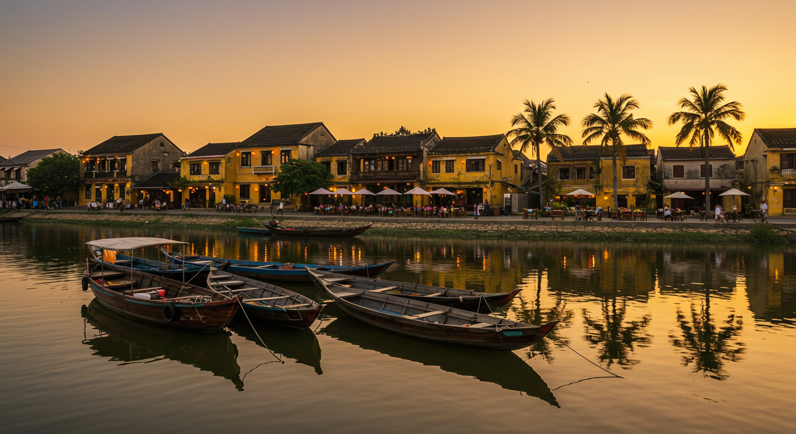

하노이의 심장, 호안끼엠 호수 이야기
여행
베트남
하노이
하노이의 상징, 호안끼엠 호수
호안끼엠 호수(Hồ Hoàn Kiếm)는 베트남 하노이 구시가지의 중심부에 위치한 아름다운 호수입니다. '반환된 검의 호수'라는 뜻을 가진 이 호수는 베트남의 역사와 문화가 깊이 스며들어 있는 특별한 장소입니다.

전설 속의 호수
호안끼엠 호수에는 흥미로운 전설이 전해져 내려옵니다. 15세기 레 로이(Lê Lợi) 황제가 중국 명나라와의 전쟁에서 승리할 수 있었던 것은 거북신이 준 신비한 검의 힘 덕분이었다고 합니다. 전쟁이 끝난 후, 호수에서 거북이 나타나 그 검을 다시 가져갔다고 하여 '반환된 검의 호수'라는 이름을 갖게 되었습니다.

주요 명소
호수 주변의 대표적인 볼거리들:
- 응옥선 사당(Đền Ngọc Sơn)
- 호수 북쪽의 작은 섬에 위치
- 아름다운 붉은 다리(더 후크 다리)로 연결
-
베트남 전통 건축의 정수를 보여주는 사당
-
거북탑(Tháp Rùa)
- 호수 중앙에 위치한 작은 탑
- 호안끼엠 호수의 상징적인 건축물
- 전설 속 거북을 기념하는 구조물

현대적 의미
오늘날 호안끼엠 호수는: - 하노이 시민들의 휴식 공간 - 아침/저녁 운동을 즐기는 장소 - 주말마다 열리는 보행자 거리 - 연인들의 데이트 명소 - 관광객들의 필수 방문지
방문 정보
- 위치: 하노이 구시가지 중심부
- 최적 방문 시간: 이른 아침 또는 해질 무렵
- 주변 시설: 카페, 레스토랑, 기념품 상점
- 추천 활동:
- 호수 주변 산책
- 전통 아이스크림 체험
- 주말 야시장 방문
- 베트남 전통 커피 즐기기
호안끼엠 호수는 단순한 관광지를 넘어 하노이의 역사와 문화, 그리고 일상이 어우러진 살아있는 공간입니다. 하노이를 방문한다면 꼭 들러봐야 할 필수 명소입니다.